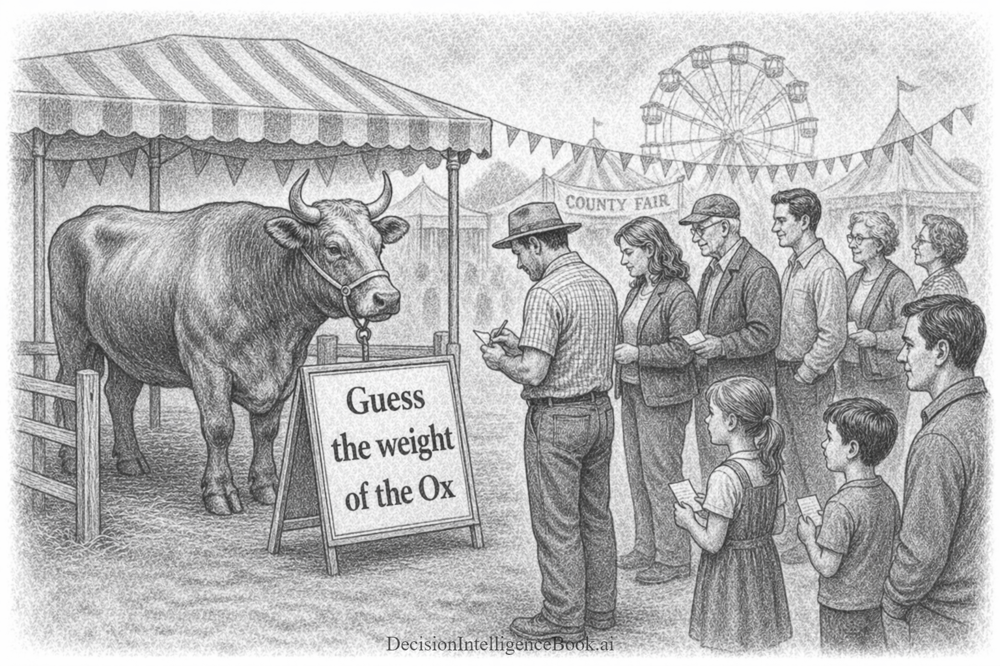
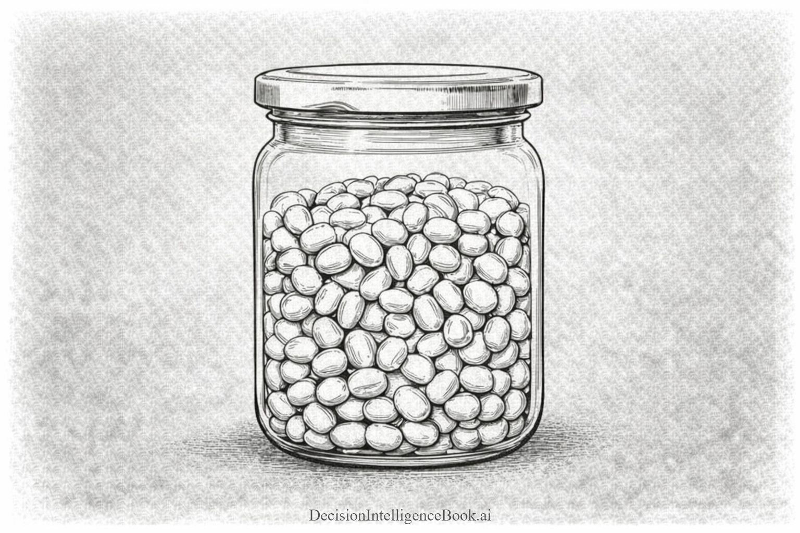
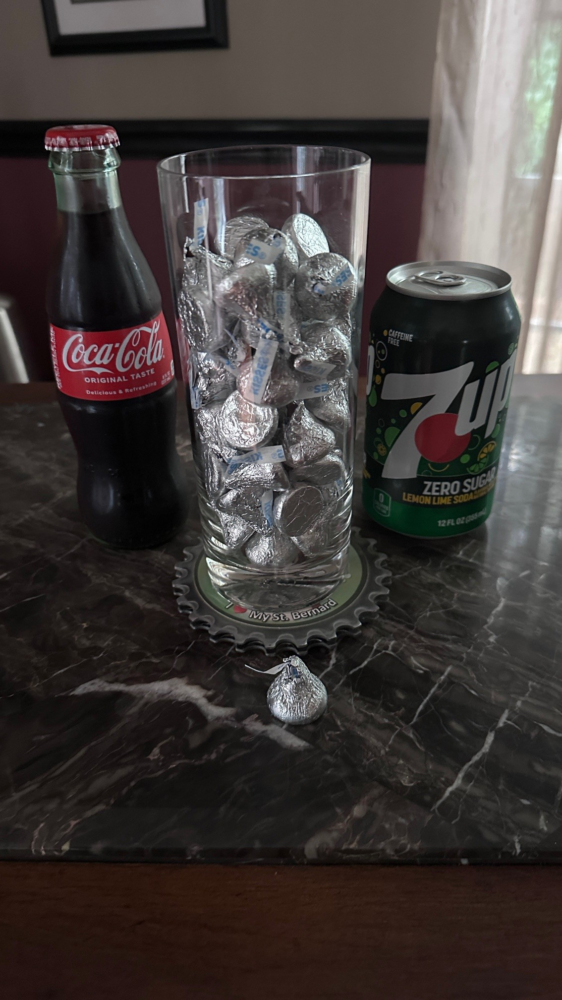
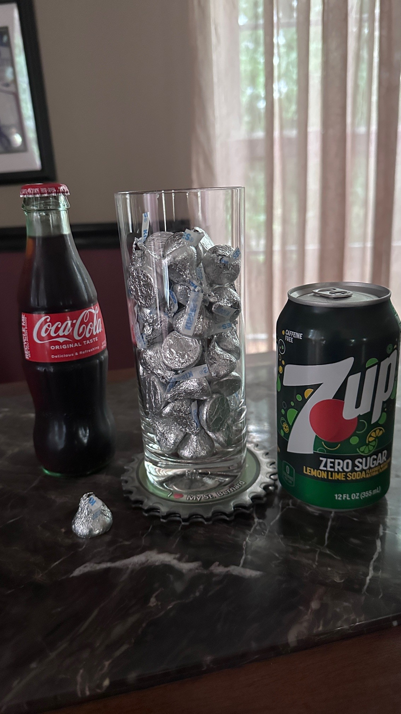
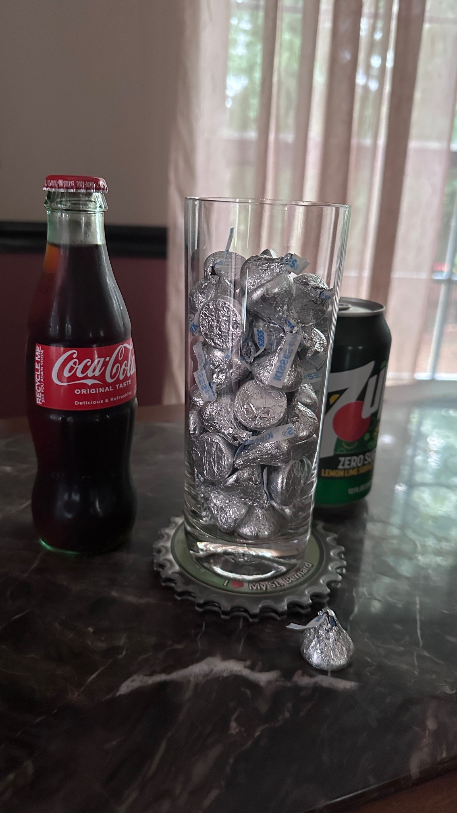
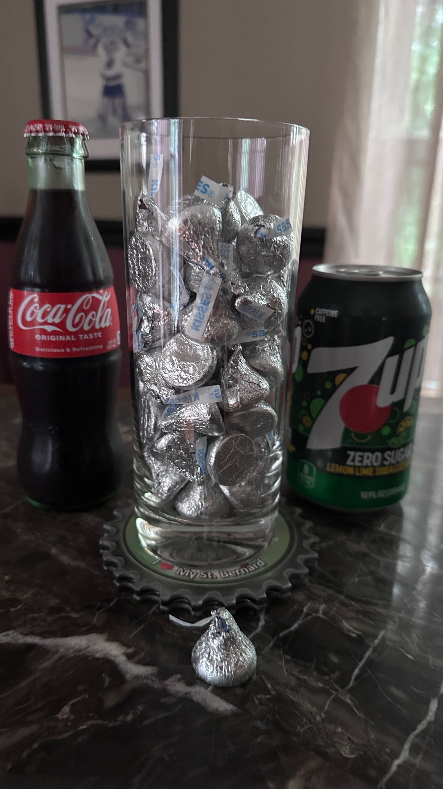
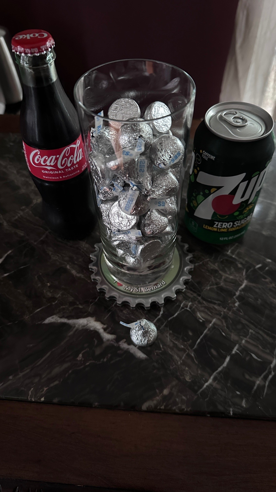

Chapter 5B
Collective Intelligence
Decision Intelligence applied in this module:
- Optimize prompts for logic, reasoning decisions
- Chain of Thought & Reasoning with decisions
- Understand & Implement Collective Intelligence with AI
- Optimizing Confidence outputs with AI
- Reporting quantitative decision recommendations as intervals
In this module, the OpenAI Responses API specification will be used to interact with the Generative AI models. This specification includes some additional capabilities over the Chat Completions API. The main feature that will be used will be the ability to retrive the reasoning summary (internal monologue of the model before it gives the answer).
Step 1 - Initialize Configuration Builder & Build the AI Orchestration¶
Execute the next two cells to:
- Use the Configuration Builder to load the API secrets.
- Use the API configuration to build the Responses API orchestrator.
// Import the required NuGet configuration packages
#r "nuget: Microsoft.Extensions.Configuration, 10.0.8"
#r "nuget: Microsoft.Extensions.Configuration.Json, 10.0.8"
#r "nuget: System.Text.Json, 10.0.8"
using Microsoft.Extensions.Configuration.Json;
using Microsoft.Extensions.Configuration;
using System.IO;
using System;
// Load the configuration settings from the local.settings.json and secrets.settings.json files
// The secrets.settings.json file is used to store sensitive information such as API keys
var configurationBuilder = new ConfigurationBuilder()
.SetBasePath(Directory.GetCurrentDirectory())
.AddJsonFile("local.settings.json", optional: true, reloadOnChange: true)
.AddJsonFile("secrets.settings.json", optional: true, reloadOnChange: true);
var config = configurationBuilder.Build();
// IMPORTANT: You ONLY NEED either Azure OpenAI or OpenAI connection info, not both.
// Azure OpenAI Connection Info
var azureOpenAIEndpoint = config["AzureOpenAI:Endpoint"];
var azureOpenAIAPIKey = config["AzureOpenAI:APIKey"];
var azureOpenAIModelDeploymentName = config["AzureOpenAI:ModelDeploymentName"];
// OpenAI Connection Info
var openAIAPIKey = config["OpenAI:APIKey"];
var openAIModelId = config["OpenAI:ModelId"];
// Import the Microdoft Extensions AI NuGet Packages
#r "nuget: Microsoft.Extensions.AI, 10.6.0"
#r "nuget: Microsoft.Extensions.AI.Abstractions, 10.6.0"
#r "nuget: Microsoft.Extensions.AI.OpenAI, 10.6.0"
// Import Azure & OpenAI NuGet Packages
#r "nuget: Azure.AI.OpenAI, 2.9.0-beta.1"
#r "nuget: Azure.Identity, 1.21.0"
#r "nuget: OpenAI, 2.10.0"
using Azure;
using Azure.AI.OpenAI;
using Microsoft.Extensions.AI;
using Microsoft.Extensions.Configuration;
using OpenAI.Responses;
using System.ClientModel;
using System.ComponentModel;
using System.Text.Json;
var apiKeyCredential = new ApiKeyCredential(azureOpenAIAPIKey);
var azureOpenAIClient = new AzureOpenAIClient(
new Uri(azureOpenAIEndpoint),
apiKeyCredential);
#pragma warning disable OPENAI001
// 1) Get the ResponsesClient from AzureOpenAIClient
var responsesClient = azureOpenAIClient.GetResponsesClient();
// 2) Adapt it to Microsoft.Extensions.AI IChatClient
IChatClient chatClient = responsesClient.AsIChatClient(defaultModelId: azureOpenAIModelDeploymentName);
#pragma warning restore OPENAI001
Step 2 - Chain of Thought Reasoning for Decision Intelligence¶
📜 "The happiness of your life depends upon the quality of your thoughts."
-- Marcus Aurelius (Roman emperor, philosopher)
One of the most effective techniques to improve logic, reasoning and overall decision-making for most LLMs is to use "Chain of Thought" (CoT) techniques. The "Chain of Thought" approach helps by breaking down complex tasks into smaller steps, making it easier to solve problems without missing important details. It improves accuracy because each step is made clear to the LLM and helps avoid mistakes. This method also makes the thought process easier to understand and explain, allowing for easier corrections when something goes wrong. The approach is useful for handling difficult concepts and multi-step problems like math or logic, making things clearer and more manageable.
The concept of "Chain of Thought" techniques has been recently popularized by Generative AI. However, this technique is not new nor is it specific only to Generative AI models. Breaking down complex tasks into simpler more approachable steps and organizing thoughts has been used by decision-makers, professional services organizations and management consulting companies for quite some time. Prior to Generative AI, the concepts have been known as: "structured thinking", "MECE framework" (Mutually Exclusive, Collectively Exhaustive), and "hypothesis-driven problem-solving".
First, approach the problem with a simple Decision prompt technique. The system decisoin prompt will be set to basic & clear decision assistant persona instructions. While this decision prompt is simple, it is still quite effective to instruct the LLM model on how to approach the decision problem.
// Set the system prompt to behave like a decision intelligence assistant (persona)
var systemPromptForDecisions = """
You are a Decision Intelligence assistant.
Help the user explore options, evaluate tradeoffs, reason through uncertainty, solve problems,
and apply systems thinking to personal, professional, strategic, and operational decisions.
Provide responses that are structured, logical, and thorough.
Aim to improve the user's judgment rather than make choices for them.
Be balanced, analytical, and pragmatic.
Adapt depth and complexity to the user's context.
When the situation is ambiguous, ask targeted clarifying questions or state reasonable assumptions explicitly.
When multiple valid paths exist, present them fairly and explain when each would make sense.
-------------------------------
Output Formatting Instructions:
Format the response using only a Markdown table.
Only return a Markdown table, unless the user explicitly asks for a different format.
Do not enclose the table in triple backticks.
""";
// Simple instruction prompt to plan retirement
var decisionPuzzlePrompt = """
A farmer is on one side of a river with a wolf, a goat, and a cabbage.
When he is crossing the river in a boat, he can only take one item with him at a time.
The wolf will eat the goat if left alone together, and the goat will eat the cabbage if left alone together.
How can the farmer transport the goat across the river without it being eaten?
""";
// Create a new pre-mortem analysis chat
var chatMessagesDecision = new List<ChatMessage>();
// Add system and user messages to the chat history
var systemMessage = new ChatMessage(ChatRole.System, systemPromptForDecisions);
var userMessage = new ChatMessage(ChatRole.User, decisionPuzzlePrompt);
chatMessagesDecision.Add(systemMessage);
chatMessagesDecision.Add(userMessage);
// Execute the chat messages against the AI model
var decisionPuzzlePromptResponse = await chatClient.GetResponseAsync(chatMessagesDecision);
var decisionPuzzlePromptResponseText = decisionPuzzlePromptResponse.Text;
// Display the response string as Markdown
decisionPuzzlePromptResponseText.DisplayAs("text/markdown");
("---").DisplayAs("text/markdown"); // Break of the ooutput section
Let's approach the same problem with a much more sophisticated "Chain of Thought" (CoT) system prompt to break the problem down and think about it more in depth. Notice that the prompt below is much more detailed in how the "decision intelligence assistant" should approach the problem, highlighting things it should or should not consider and the way it should arrive at the final answer.
Chain of Thought (CoT) prompt instructions will vary depending on how the problem needs to be approached. It can include very specific decision framework instructions, systematic decision heuristics or management consulting best practices. In general, these detailed prompts result in the LLM providing more detail and usually better outcomes. However, there are a few drawbacks to overusing Chain of Thought (CoT):
- A very long and detailed Chain of Thought (CoT) can confuse the LLM model, especially if the LLM model is smaller (i.e. GPT-4o-mini or Phi-4 etc.)
- GenAI LLM models can hallucinate not just on output of answers. They can also hallucinate the Chain of Thought (CoT) they are describing in the final answer! This is a very sneaky way of potentially providing a confident answer paired with a confident approach (Chain of Thought) that the LLM may not even be using!
// Set the system prompt to behave like a decision intelligence assistant (persona)
var systemPromptForDecisionsChainOfThought = """
You are a Decision Intelligence assistant.
Help the user explore options, evaluate tradeoffs, reason through uncertainty, solve problems,
and apply systems thinking to personal, professional, strategic, and operational decisions.
Provide responses that are structured, logical, and thorough.
Aim to improve the user's judgment rather than make choices for them.
Be balanced, analytical, and pragmatic.
Adapt depth and complexity to the user's context.
When the situation is ambiguous, ask targeted clarifying questions or state reasonable assumptions explicitly.
When multiple valid paths exist, present them fairly and explain when each would make sense.
Before providing any answer, you must:
1) Understand the Problem: Carefully read and understand the user's question or request.
2) Break Down the Reasoning Process: Outline the steps required to solve the problem or respond to the request logically and sequentially. Think aloud and describe each step in detail.
Explain Each Step: Provide reasoning or calculations for each step, explaining how you arrive at each part of your answer.
Provide structured, logical, and comprehensive advice.
3) Review the Thought Process: Double-check the reasoning for errors or gaps before finalizing your response.
Always aim to make your thought process transparent and logical.
4) Arrive at the Final Answer: Only after completing all steps, provide the very detailed final answer or detailed solution.
5) Ensure to communicate decision details.
Output Format Instructions:
When generating Markdown, do not use any headings higher than ###.
Avoid # and ## headers. Use only ###, ####, or lower-level headings if necessary.
All top-level section headers should start at ### or lower.
Format the response using only a Markdown table.
Only return Markdown tables, unless the user explicitly asks for a different format.
If returning multiple tables, separate them with explanatory text and ensure each table is clearly labeled with a descriptive title in the text.
Do not enclose the table in triple backticks.
""";
// Simple instruction prompt to plan retirement
var decisionPuzzlePrompt = """
A farmer is on one side of a river with a wolf, a goat, and a cabbage.
When he is crossing the river in a boat, he can only take one item with him at a time.
The wolf will eat the goat if left alone together, and the goat will eat the cabbage if left alone together.
How can the farmer transport the goat across the river without it being eaten?
""";
// Create a new decision puzzle chat
var chatMessagesDecisionChainOfThought = new List<ChatMessage>();
// Add system and user messages to the chat history
var systemMessage = new ChatMessage(ChatRole.System, systemPromptForDecisionsChainOfThought);
var userMessage = new ChatMessage(ChatRole.User, decisionPuzzlePrompt);
chatMessagesDecisionChainOfThought.Add(systemMessage);
chatMessagesDecisionChainOfThought.Add(userMessage);
// Define reasoning options for the chat completion.
// Note: For speed optimization, reasoning effort is set to None.
#pragma warning disable OPENAI001
// Add options to enable reasoning and include the reasoning summary in the response
var chatOptions = new ChatOptions
{
RawRepresentationFactory = _ => new CreateResponseOptions
{
Model = azureOpenAIModelDeploymentName,
ReasoningOptions = new ResponseReasoningOptions
{
ReasoningEffortLevel = ResponseReasoningEffortLevel.High,
ReasoningSummaryVerbosity = ResponseReasoningSummaryVerbosity.Detailed
},
StoredOutputEnabled = false
}
};
// Execute the chat messages against the AI model
var decisionPuzzlePromptChainOfThoughtResponse = await chatClient.GetResponseAsync(chatMessagesDecisionChainOfThought, chatOptions);
var decisionPuzzlePromptChainOfThoughtResponseText = decisionPuzzlePromptChainOfThoughtResponse.Text;
// Retrieve the Reasoning Content/Summary
string decisionPuzzlePromptChainOfThoughtResponseReasoningSummary = string.Join(
"\n\n",
decisionPuzzlePromptChainOfThoughtResponse.Messages
.SelectMany(m => m.Contents)
.OfType<TextReasoningContent>()
.Select(c => c.Text)
.Where(t => !string.IsNullOrWhiteSpace(t)));
// Display the reasoning summary as Markdown
("### **Reasoning Summary:**").DisplayAs("text/markdown");
decisionPuzzlePromptChainOfThoughtResponseReasoningSummary.DisplayAs("text/markdown");
// Display the response string as Markdown
("### **Answer:**").DisplayAs("text/markdown");
decisionPuzzlePromptChainOfThoughtResponseText.DisplayAs("text/markdown");
("---").DisplayAs("text/markdown"); // Break of the ooutput section
// Add the summary and the response together in a single string
var decisionPuzzlePromptChainOfThoughtResponseTextWithSummary =
$"### **Reasoning Summary:**\n\n{decisionPuzzlePromptChainOfThoughtResponseReasoningSummary}\n\n---\n\n### **Answer:**\n\n{decisionPuzzlePromptChainOfThoughtResponseText}";
#pragma warning restore OPENAI001
One of the additional capabilities that reasoning models provide is the ability to retrieve the reasoning content or summary. This depends on the API interfaces exposed on the model. Therefore, the "AI internal monologue" can be provided with the answer to complete the decision recommendation.
When the Generative AI model has generated two different decision approaches to the same decision scenario, an LLM can be used to decide which decision approach is of better quality. The evaluation could be done by another AI model or an AI model from different AI provider to reduce potential bias.
After running the evaluation of the decision prompts below, notice the GenAI LLM model prefers the approach of the Chain of Thought (CoT) over the simple system prompt instruction. Furthermore, the AI model appreciates using the "Decision Communication" step with the applied Minto Pyramid.
📝 Note: When executing the decision approach evaluation below, you may notice that sometimes Approach 1 is preferred. This happens as Approach 2 with Chain of Thought is considered verbose and not a clear as Approach 1 to the AI model. In a real-world implementation, the prompt instruction will have this made very clear on what the criteria are. I specifically left that instruction out of the prompt to illustrate that even an AI model can vary it's preference!
var systemPromptEvaluateResponses = """
You are an assistant that is evaluating an approach response to a question.
You will be provided with an important decision as well as two proposed approaches.
The two approaches are labeled "Approach 1" and "Approach 2".
Compare the two approaches and evaluate them based on their:
Logical structured reasoning of approach, detail of the approach to the decision and the quality the communication.
Note that one approach may include more detailed reasoning steps, but the other approach may communicate the final answer more clearly.
Create a final score between 1 and 10 for each approach based on the evaluation criteria.
Format the response using only a Markdown table. Only return a Markdown table.
Do not enclose the table in triple backticks.
""";
var decisionEvaluationTemplateApproaches = $"""
Decision Scenario:
{decisionPuzzlePrompt}
------------------------------------------------
Approach 1:
{decisionPuzzlePromptResponseText}
End of Approach 1
------------------------------------------------
Approach 2:
{decisionPuzzlePromptChainOfThoughtResponseTextWithSummary}
End of Approach 2
""";
// Create new decision puzzle chat messages
var chatMessagesDecisionApproachEvaluation = new List<ChatMessage>();
// Add system and user messages to the chat history
var systemMessage = new ChatMessage(ChatRole.System, systemPromptEvaluateResponses);
var userMessage = new ChatMessage(ChatRole.User, decisionEvaluationTemplateApproaches);
chatMessagesDecisionApproachEvaluation.Add(systemMessage);
chatMessagesDecisionApproachEvaluation.Add(userMessage);
// Execute the chat messages against the AI model
var decisionApproachEvaluationResponse = await chatClient.GetResponseAsync(chatMessagesDecisionApproachEvaluation);
var decisionApproachEvaluationResponseText = decisionApproachEvaluationResponse.Text;
// Display the reasoning summary as Markdown
("### **Evaluation:**").DisplayAs("text/markdown");
decisionApproachEvaluationResponseText.DisplayAs("text/markdown");
Step 3 - Understanding Collective Intelligence for Decision Intelligence¶
Collective Intelligence - Pooling Wisdom of Multiple Opinions¶
Imagine you’ve hurt your leg playing a long season of football games. You have another football season quickly approaching and you would like to understand how long will it take to heal properly. Additionally, you would like to understand the optimal medical treatment to ensure you are ready at the start of the next football season. You decide to visit three different doctors for their medical opinions. You don’t want to rely on just one doctor because each professional might notice something the others miss. Each medical specialist may decide to recommend a different approach based on their expertise or their own experience treating leg injuries. After you receive opinions from three different specialists, you think about their recommendations and then formulate a path forward (decision) for a treatment plan for your leg. The final treatment plan could be a result a variety of factors. For example, it could be simple and all three doctors could recommend 4-6 weeks rest. Clearly in that case there is a consensus with three different doctors on the treatment approach. What if the doctors diverge in their opinions? What if 2 of 3 doctors recommend rest and a third recommends an additional procedure on top of rest? What if all three doctors opinions totally diverge? Now you have to personally judge those doctor opinions collectively or potentially weight one doctor's opinion more significantly than others. This scenario illustrates a simplified version of collective intelligence, where pooling diverse expert opinions often leads to a more informed and balanced decision.
The idea of multiple experts arriving at a cohesive conclusion isn’t new. It has been demonstated that pooling the wisdom of multiple “opinions” can often outperform a single prediction. Those opinions don't have to be human experts. The opinions can be outcomes from a statistical model, a large survey, a machine learning model or Generative AI. You have probably have heard the terms: Wisdom of the Crowds, Collective Intelligence, Bootstrapping (technique in statistical analysis), Ensembling (Machine Learing) or Mixture of Experts (Generative AI). These are all similar techniques (with their own unique implementations) that derive of the core concept of "pooling wisdom of multiple opinions".
Examples of "Wisdom of the Crowds" at Scale¶
"Wisdom of the Crowds" can scale well beyond just a few doctor's opinions. In the examples below, note the number of samples collected for each situation is much greater than just a few doctors. In fact, the amount of samples collected can be in the hundreds and the Collective Intelligence power can hold true.
Francis Galton’s Ox-Weighing Experiment (1906)

Sir Francis Galton, an English statistician, collected 787 guesses from fairgoers trying to estimate the weight of an ox. The average guess was 1,197 pounds, and the actual weight of the ox turned out to be 1,198 pounds. To Galton’s surprise, the average of these guesses (1,197 pounds) came remarkably close to the ox’s actual weight (1,198 pounds)—off by a single pound, or less than 0.1%. That level of accuracy was notable because the crowd was composed of a mixed audience: farmers with relevant experience, but also onlookers, tradespeople, and curious fairgoers with no particular expertise.
Modern “Jelly Bean Jar” Contests

Many schools and charities run fundraisers where people pay to guess the number of jelly beans in a jar. It’s commonly observed that while individual guesses can be wildly off, the average of a sufficiently large group is typically within a small percentage (often under 5% error) of the true count. As an example, Michael Mauboussin ran an 2007 experiment where Mauboussin presented a jar of jelly beans to 73 Columbia Business School students. The students' guesses ranged from 250 to 4,100, with an average error of 62%. However, the group's average guess was 1,151, which represented only a 3% off the correct number. Only two students guessed better!
The cool part of the “Jelly Bean Jar” experiment is that it is very approachable to run yourself. In fact, you can do this with Generative AI as well.
A short (5 minute) YouTube video illustrates running this experiment with human opinions:

Netflix Recommendation Algorithm Million Dollar Prize
In 2006, Netflix launched the million-dollar Netflix Prize competition, challenging participants to improve its movie recommendation algorithm (Cinematch) by at least 10 percent. Over three years, data scientists and researchers worldwide experimented with innovative approaches, culminating in 2009 when an ensemble team calling itself “BellKor’s Pragmatic Chaos” finally met the 10-percent threshold with 10.06%. This group had blended multiple models into a single “ensemble” algorithm that outperformed any single predictive approach. This demonstrated how synthesis of different predictions can be more powerful than one model alone. Although Netflix ultimately chose not to deploy the winning solution due to technical and privacy considerations, the competition is still regarded as a landmark moment in machine learning and collective problem-solving.
More information can be found here: https://en.wikipedia.org/wiki/Netflix_Prize
“Ask the Audience” on Who Wants to Be a Millionaire?
On the TV quiz show, contestants can use the “Ask the Audience” lifeline to poll the studio audience for the correct answer. Historical data shows that the audience collectively identifies the correct answer around 90% of the time, which is significantly more accurate than individual expert panels, or even the “Phone a Friend” lifeline.
The U.S. Navy’s Hunt for the Missing Submarine Scorpion (1968)
When the USS Scorpion, a nuclear-powered submarine, vanished in 1968, the Navy enlisted a broad range of specialists to harness their varied expertise and wisdom for a methodical search. By applying Bayesian statistical techniques to each person’s estimate of where the submarine might lie, they were able to synthesize these disparate perspectives into a single, remarkably accurate prediction. The team’s calculated guess put the submarine’s probable location just a few hundred yards from its actual resting place! This is a testament to the effectiveness of coalescing multiple expert viewpoints. This success with the USS Scorpion search later inspired more widespread use of Bayesian approaches for complex rescue and recovery operations, affirming the power of collective intelligence in high-stakes scenarios.
Statistics Explains why Collective Intelligence Works¶
It is important to understand that Collective Intelligence mechanisms are rooted in several statistics principles. This allows you to set up Collective Intelligence parameters appropriately for decision situations. Furthermore, this allows you to perform math (quantitative analysis) in the Decision Intelligence Execution step. The key statistical principles of Collective Intelligence:
- Average of Independent Predictions: The average of many independent predictions, opinions or guesses will average itself out towards the true value. Each individual prediction can be assumed to have an error.
Therefore the formula is: Prediction = True Value + Error.
As long as the errors are random, they will trend to cancel each other out on average. - Law of Large Numbers: The more guesses you have, the more the random errors balance out, reducing the overall variance of the collective guess. Mathematically, if you have a large number of independent predictions, the average guess converges on the True Value.
- Central Limit Theorem: The distribution of preductions will tend toward a bell curve (a normal distribution) around the Predicted True Value. When you take the average (mean) of a large sample from a sample distribution like this, it will often fall near the true population distribution. This happens more often in real-life than statistics courses lead on.
Statistics explaining Collective Intelligence (Wisdom of the Crowds) is greatly simplfied and there are things to consider when attempting to replicate this experiment with real-world decision situations:
Bias Matters: Collective Intelligence works best when individual biases do not all tilt in the same direction. For example, if you only poll basketball players about height-related predictions, it may introduce a huge bias towards larger height in a single direction.
Independence: The group’s diversity and independence of guesses are critical. A group of people trained in the same way or over-influenced by each other’s guesses might show correlated errors, undermining the benefit of aggregation.
Meaningful Sample Size: The sampling error shrinks as you collect more predictions (guesses). Assume you have 𝑁 amount of independent predictions. If each prediction's random error in guessing has a standard deviation of 𝜎, then the standard error of the mean guess drops by about a factor of $\sqrt{𝑁}$. What does this mean? The more samples you add, the more reduction of the error you will notice. Furthermore, you will notice a larger reduction in error with the first initial predictions than further predictions made. Saying it another way. For example, if you have a certain error from 10 samples and you want to reduce that prediction error by half you need a total of 40 samples. Conversely, if you have 100 samples and you want to reduce that prediction error by half you need a total of 400 samples!
Step 4 - Implementing Collective Intelligence with Generative AI¶
Collective Intelligence with AI Scenario Introduction¶
In this section, we will re-create the classic “guess the number of jelly beans” challenge, with a glass filled with Hershey’s Kisses. If you think about how these challenges are typically done, a human is presented a container (jar, glass, clear bucket) filled with candy. The human making the guess can look inside the container, inspect it, sometimes even hold the container and their visual senses can give it a sense of scale.
In order to simulate this as best as possible for Artifical Intelligence (limited to only visual senses):
- Multiple images will be used (5 in total) of the same glass filled with Hershey's kisses
- The glass will be clear, so the main perspective of the contents are not obstructed
- Each image will show a different perspective view of the glass containing the candy
- Each image will include two key reference points a soda can and a glass bottle, which we can assume the AI knows via it's training data sets
- Each image will include a single Hershey's Kisses as a scale reference point
The 5 images are shown below. Before scrolling down, can you guess the number of Hershey's Kisses?





📝 Note: There are a total of 50 Hershey's Kisses in the glass. That is the actual answer or the "ground truth". The actual answer is never known by the AI models.
Single Point Estimates with Artificial Intelligence¶
In order to implement Collective Intelligence with Generative AI, the first step is to be able to perform a single estimate. The code section below will use AI to perform a single point estimate based off of a single image of the glass filled with Hershey's kisses.
The code should be familiar by now. The main change is that we are adding a reference to the actual Hershey's Kisses image. This will provide the "eyes" to the Artificial Intelligence model.
using System.Net.Http; // Using HttpClient to download the image from the web
// Helper method to download the image as byte array and create a DataContent object
static async Task<DataContent> DownloadImageAsDataContentAsync(
HttpClient httpClient,
Uri imageUri,
string mediaType = "image/jpeg")
{
byte[] bytes = await httpClient.GetByteArrayAsync(imageUri);
return new DataContent(bytes, mediaType);
}
// Set the system prompt to behave like a decision intelligence assistant (persona)
var systemVisualDecisionPrompt = """
You are a helpful expert visual estimator and decision-maker.
CRITICAL FIRST STEP (MANDATORY):
Before doing anything else, determine whether an image input is actually present in the request.
- If NO image is present or accessible:
Respond EXACTLY with:
Image not provided
Do not add anything else.
Do not attempt visual reasoning.
Do not guess or hallucinate.
- If an image IS present:
Proceed with visual inspection.
----------------------------------
VISUAL INSPECTION (ONLY if image exists):
Carefully analyze the image using only visible evidence:
- Objects, materials, and conditions
- Sizes, proportions, and layout
- Visible defects, anomalies, or notable features
- Context clues (environment, lighting, usage)
Do NOT infer details that are not clearly visible.
----------------------------------
OUTPUT RULES:
If NO image:
Image not provided
If image IS present:
Return ONLY a single integer.
Do not include any explanation, reasoning, or extra text.
Do not include labels, words, or formatting.
----------------------------------
VALID OUTPUT EXAMPLES:
12
100
1234
5443
45
""";
// Simple instruction prompt to plan retirement
var visualIntelligencePrompt = """
You have an image of a glass with Hershey's Kisses chocolates.
There is a soda can, soda bottle and a single hershey kiss outside provided for scale.
Estimate the number of Hershey's Kisses in the glass.
Think through the estimate clearly using all the available information in the image.
""";
// Uri of a single image of a Hershey's Kisses in a glass
Uri githubImageUri1 = new(
"../Images/CodeExercises/CollectiveIntelligence/HersheyKisses1.jpg");
var dataContentUri1 = await DownloadImageAsDataContentAsync(new HttpClient(), githubImageUri1);
// Create new decision puzzle chat messages
var chatMessagesVisualInspection = new List<ChatMessage>();
// Add system message
var systemMessage = new ChatMessage(ChatRole.System, systemVisualDecisionPrompt);
chatMessagesVisualInspection.Add(systemMessage);
// Add user message
// Build a multi-part user message
var userMessage = new ChatMessage();
userMessage.Role = ChatRole.User;
// Add text prompt
userMessage.Contents.Add(new TextContent(visualIntelligencePrompt));
// Add image (DataContent)
userMessage.Contents.Add(dataContentUri1);
chatMessagesVisualInspection.Add(userMessage);
// Execute the chat messages against the AI model
var visualInspectionResponse = await chatClient.GetResponseAsync(chatMessagesVisualInspection);
var visualInspectionResponseText = visualInspectionResponse.Text;
// Display the reasoning summary as Markdown
("### **Evaluation:**").DisplayAs("text/markdown");
visualInspectionResponseText.DisplayAs("text/markdown");
As you can see the visual estimates by the AI model are OK, but not ideal. There are a couple of improvements that can be made:
- The reference objects for scale in the photos can be clearly defined.
- A single image only provides a small section of context to the AI system. It will would be more powerful to provide several different images to provide various perspectives angles. The idea is that the AI system can use these images to perform a better estimate.
using System.Net.Http; // Using HttpClient to download the image from the web
// Helper method to download the image as byte array and create a DataContent object
static async Task<DataContent> DownloadImageAsDataContentAsync(
HttpClient httpClient,
Uri imageUri,
string mediaType = "image/jpeg")
{
byte[] bytes = await httpClient.GetByteArrayAsync(imageUri);
return new DataContent(bytes, mediaType);
}
// Set the system prompt to behave like a decision intelligence assistant (persona)
var systemVisualDecisionPrompt = """
You are a helpful expert visual estimator and decision-maker.
CRITICAL FIRST STEP (MANDATORY):
Before doing anything else, determine whether an image input is actually present in the request.
- If NO image is present or accessible:
Respond EXACTLY with:
Image not provided
Do not add anything else.
Do not attempt visual reasoning.
Do not guess or hallucinate.
- If an image IS present:
Proceed with visual inspection.
----------------------------------
VISUAL INSPECTION (ONLY if image exists):
Carefully analyze the image using only visible evidence:
- Objects, materials, and conditions
- Sizes, proportions, and layout
- Visible defects, anomalies, or notable features
- Context clues (environment, lighting, usage)
Do NOT infer details that are not clearly visible.
----------------------------------
OUTPUT RULES:
If NO image:
Image not provided
If image IS present:
Return ONLY a single integer.
Do not include any explanation, reasoning, or extra text.
Do not include labels, words, or formatting.
----------------------------------
VALID OUTPUT EXAMPLES:
12
100
1234
5443
45
""";
// Simple instruction prompt to plan retirement
var collectiveIntelligencePromptMultipleImages = """
You have an image of a glass with Hershey's Kisses chocolates.
There is a soda can, soda bottle and a single hershey kiss outside provided for scale.
Reference objects for scale (present in every photo)
- A 12 oz (355 ml) soda can
- A 8 oz (237 ml) soda bottle
- A single wrapped Hershey's Kiss placed outside the glass
Estimate the number of Hershey's Kisses in the a clear glass shown in five images.
Think through the estimate clearly using all 5 of the available information in all of the images.
""";
// Uris of a 5 images of a Hershey's Kisses in a glass
Uri githubImageUri1 = new(
"../Images/CodeExercises/CollectiveIntelligence/HersheyKisses1.jpg");
Uri githubImageUri2 = new(
"../Images/CodeExercises/CollectiveIntelligence/HersheyKisses2.jpg");
Uri githubImageUri3 = new(
"../Images/CodeExercises/CollectiveIntelligence/HersheyKisses3.jpg");
Uri githubImageUri4 = new(
"../Images/CodeExercises/CollectiveIntelligence/HersheyKisses4.jpg");
Uri githubImageUri5 = new(
"../Images/CodeExercises/CollectiveIntelligence/HersheyKisses5.jpg");
// Download & Cache the images as DataContent objects
var dataContentUri1 = await DownloadImageAsDataContentAsync(new HttpClient(), githubImageUri1);
var dataContentUri2 = await DownloadImageAsDataContentAsync(new HttpClient(), githubImageUri2);
var dataContentUri3 = await DownloadImageAsDataContentAsync(new HttpClient(), githubImageUri3);
var dataContentUri4 = await DownloadImageAsDataContentAsync(new HttpClient(), githubImageUri4);
var dataContentUri5 = await DownloadImageAsDataContentAsync(new HttpClient(), githubImageUri5);
// Create new decision puzzle chat messages
var chatMessagesCollectiveIntelligenceVisualInspection = new List<ChatMessage>();
// Add system message
var systemMessage = new ChatMessage(ChatRole.System, systemVisualDecisionPrompt);
chatMessagesCollectiveIntelligenceVisualInspection.Add(systemMessage);
// Add user message
// Build a multi-part user message
var userMessage = new ChatMessage();
userMessage.Role = ChatRole.User;
// Add Text Content
userMessage.Contents.Add(new TextContent(collectiveIntelligencePromptMultipleImages));
// Add images
userMessage.Contents.Add(dataContentUri1);
userMessage.Contents.Add(dataContentUri2);
userMessage.Contents.Add(dataContentUri3);
userMessage.Contents.Add(dataContentUri4);
userMessage.Contents.Add(dataContentUri5);
chatMessagesCollectiveIntelligenceVisualInspection.Add(userMessage);
// Execute the chat messages against the AI model
var collectiveIntelligenceVisualInspectionResponse = await chatClient.GetResponseAsync(chatMessagesCollectiveIntelligenceVisualInspection);
var collectiveIntelligenceVisualInspectionResponseText = collectiveIntelligenceVisualInspectionResponse.Text;
// Display the reasoning summary as Markdown
("### **Evaluation:**").DisplayAs("text/markdown");
collectiveIntelligenceVisualInspectionResponseText.DisplayAs("text/markdown");
Notice that the estimates differ from before. The AI model is evaluating all 5 images with explicit references. The next improvement that can be made is to run several independent evaluations and report the performance metrics. Furthermore, the visual analysis can be improved by giving the AI some additional reasoning time.
using System.Globalization;
#pragma warning disable OPENAI001
// Reuse the same responses client and run 10 times
const int numberOfRuns = 10;
var numericResponses = new List<int>();
var rawResponses = new List<string>();
var actualNumberOfKisses = 50; // The actual number of kisses in the glass, used for reference but not provided to the model
// Add options to enable reasoning and include the reasoning summary in the response
var chatReasoningOptions = new ChatOptions
{
RawRepresentationFactory = _ => new CreateResponseOptions
{
Model = azureOpenAIModelDeploymentName,
ReasoningOptions = new ResponseReasoningOptions
{
ReasoningEffortLevel = ResponseReasoningEffortLevel.High,
// ReasoningSummaryVerbosity = ResponseReasoningSummaryVerbosity.Detailed
},
StoredOutputEnabled = false
}
};
int successfulNumericRuns = 0;
int attempt = 0;
while (successfulNumericRuns < 10)
{
attempt++;
ChatResponse response =
await chatClient.GetResponseAsync(
chatMessagesCollectiveIntelligenceVisualInspection,
chatReasoningOptions);
string responseText = (response.Text ?? string.Empty).Trim();
rawResponses.Add(responseText);
if (int.TryParse(responseText, NumberStyles.Integer, CultureInfo.InvariantCulture, out int value))
{
successfulNumericRuns++;
int distanceFromActual = value - actualNumberOfKisses;
Console.WriteLine(
$"Run {successfulNumericRuns}: Numeric response: '{responseText}', Distance from actual: {distanceFromActual}");
numericResponses.Add(value);
}
else
{
Console.WriteLine(
$"Attempt {attempt}: non-numeric response: '{responseText}' (does not count toward the 10)");
}
}
// Guard against all runs failing to parse
if (numericResponses.Count == 0)
{
throw new InvalidOperationException(
"No numeric responses were returned. Check the system prompt and model output.");
}
double average = numericResponses.Average();
int minimum = numericResponses.Min();
int maximum = numericResponses.Max();
// Average distance from actual
double averageDistanceFromActual = Math.Abs(average - actualNumberOfKisses);
// Display summary
("### **Summary Statistics:**").DisplayAs("text/markdown");
$"""
- Valid numeric responses: **{numericResponses.Count} / {numberOfRuns}**
- Average: **{average:F2}**
- Minimum: **{minimum}**
- Maximum: **{maximum}**
- Average distance from actual: **{averageDistanceFromActual:F2}**
""".DisplayAs("text/markdown");
Adding variance to simulate multiple independent estimates with Artifical Intelligence¶
Re-running the same AI configuration over multiple will not totally simulate different independent perspectives. Simulating independent perspectives can be challenging, but it can be done by combining various configurations and images. Variance will be added to this Collective Intelligence scenario by "crafting" an AI system by randomly selecting these options:
- Multiple different AI models & providers (OpenAI, Anthropic, Google)
- Different instruction prompts (Simple, Detailed, Chain of Thought)
- Vary configuration options (Reasoning Effort)
- Shuffling the images or randomly selecting 5 with replacement (could have duplicates)
📝 Note: While these are valid techniques to optimize independence, they are not always useful for enterprise systems. For example, using multiple different models or configuration settings only makes sense if your enterprise system supports these. It would not make sense to test the Google provided models if they are not being used in your overall AI system architecture.
Conclusion¶
This Collective Intelligence example was very simple, but it showed that the "Wisdom of the Crowds" (Collective Intelligence) can be applied to Generative AI to improve estimates, reducing uncertainty and potentially providing better forecasts. This direct concept can be applied more advanced decisions simply by creating simulations that introduce proper variance in a complete AI system.
Imagine that this system wasn't predicting the amount of Hershey's Kisses in a glass. Rather image the AI system was predicting sales of widgets in millions of dollars. Having an estimate between 36 million or 110 million has huge variance and implications. AI systems that do not have perfect information (can't see all of the Hershey's Kisses to just count them) will provide quite varied point estimates that have minimal value. Collective Intelligence techniques demonstrate the ability to converge to a "true" estimate range. Furthermore, having your systems provide Confidence Intervals also helps communicate that forecasts shouldn't be single point estimates.